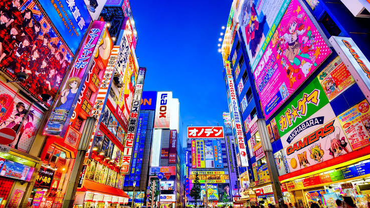

Descripción
Tokio es la capital de Japón y una de las ciudades más grandes y modernas del mundo.
La ciudad combina tecnología, cultura tradicional, gastronomía y una gran variedad de lugares turísticos.

Sitios para visitar
- Shibuya
- Tokyo Skytree
- Templo Sensoji
- Akihabara
Precios aproximados
- Vuelo: $1,200
- Hotel: $110 por noche
- Comida: $40 por día
- Transporte: $15 por día
Estadía recomendada: 7 días